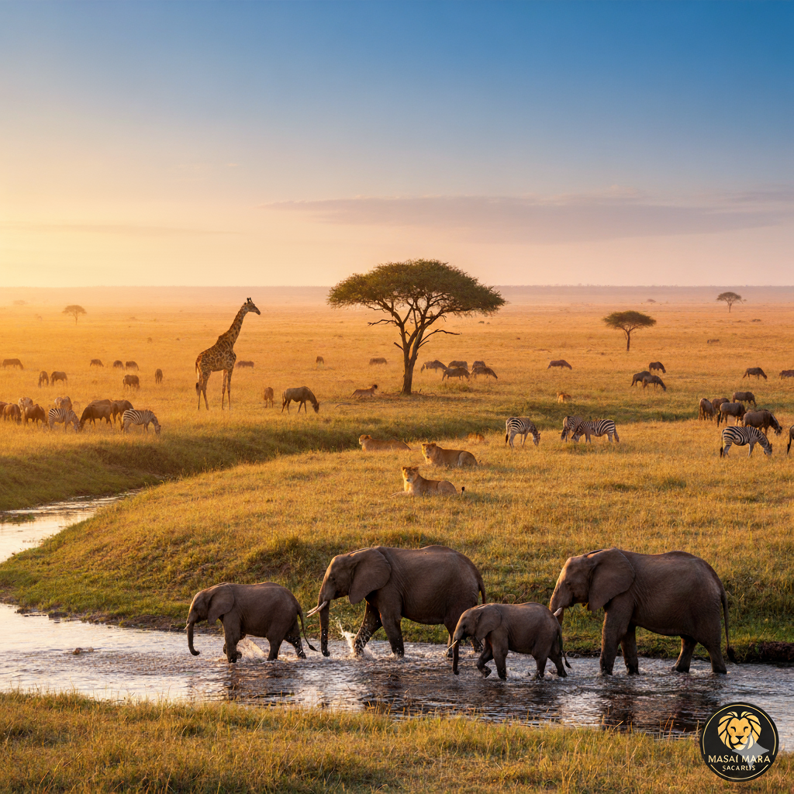
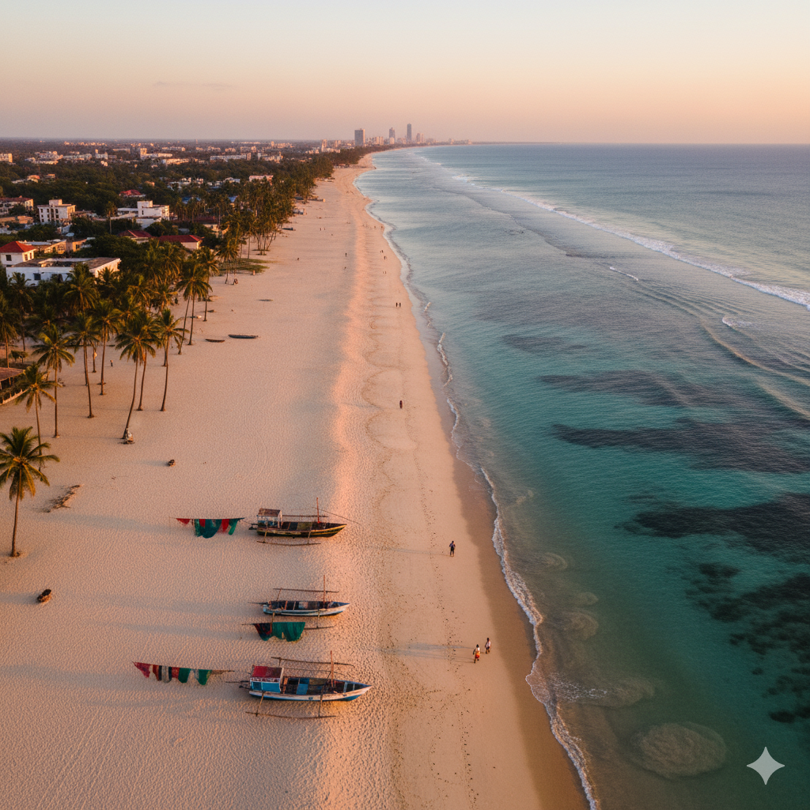
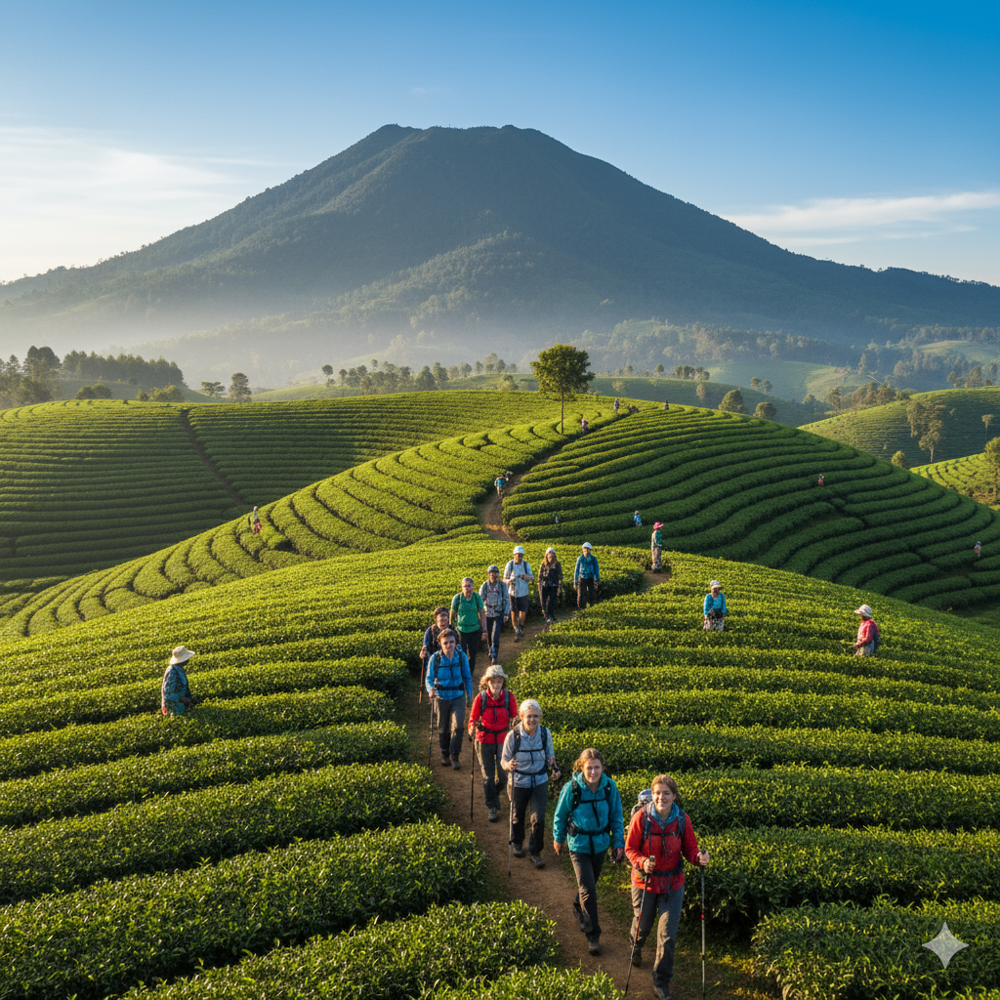
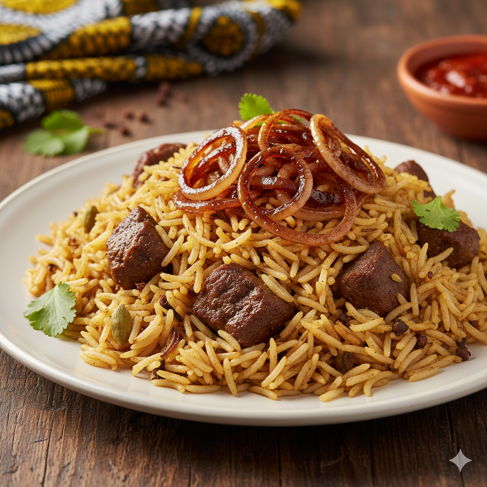
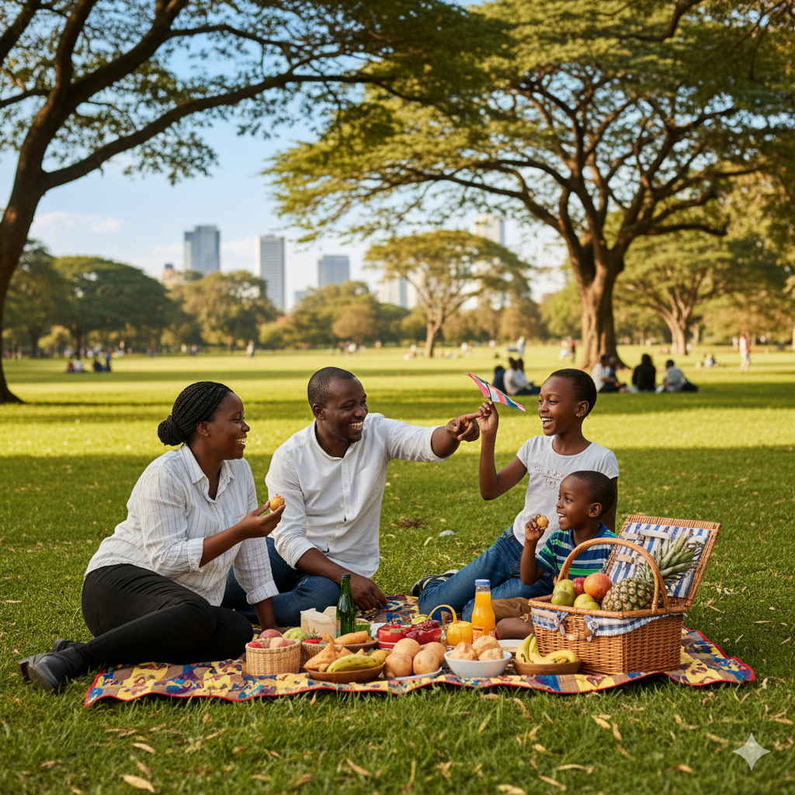

Explore Your activities
Adventure and Coastal Relaxation

Image Source: Gemini (prompt:Safari)
Enjoy your safari tour

Image Source: Gemini (prompt:Nungwi Beach)
Relax at the Beaches

Image Source: Capilot (prompt: Hiking Teza Mountain In Burundi)
Here is a group of tourist hiking at Teza tea farm in Burundi
Culinary immersion: Taste the Tradition

Image Source: Gemini (prompt: Nyama choma)
Nyama Choma
Nyama choma is one of the most famous street food in East Africa

Image Source: Gemini (prompt: Pilau)
Pilau
Pilau is one the Swahili culture food. It is more famous in Kenya and Tanzania

Image Source: Gemini (prompt: BBQ Beach)
BBQ
Enjoy the taste of bbq at the sand and feel the nice wind

Image Source: Gemini (prompt: Picnic at Park)
Family Picnic
Local can enjoy their picnic with their loves one